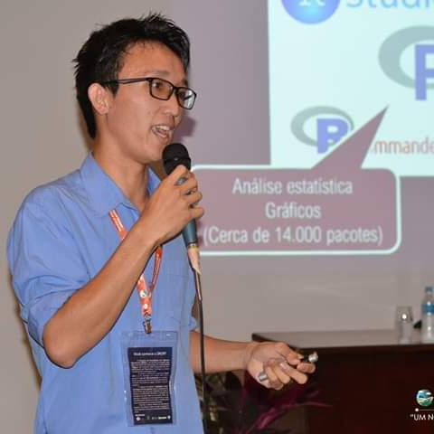

Meu website pessoal

Msc. Esp. Gabriel Danilo Shimizu
1
Home
2
About
3
Assessorias
4
Cursos
5
R
6
Projetos
6.1
Projetos de Pesquisa
6.2
Projetos de extensão
6.3
Projetos de ensino
7
Meus Packages R
8
Currículo
Gabriel Danilo Shimizu
3
Assessorias